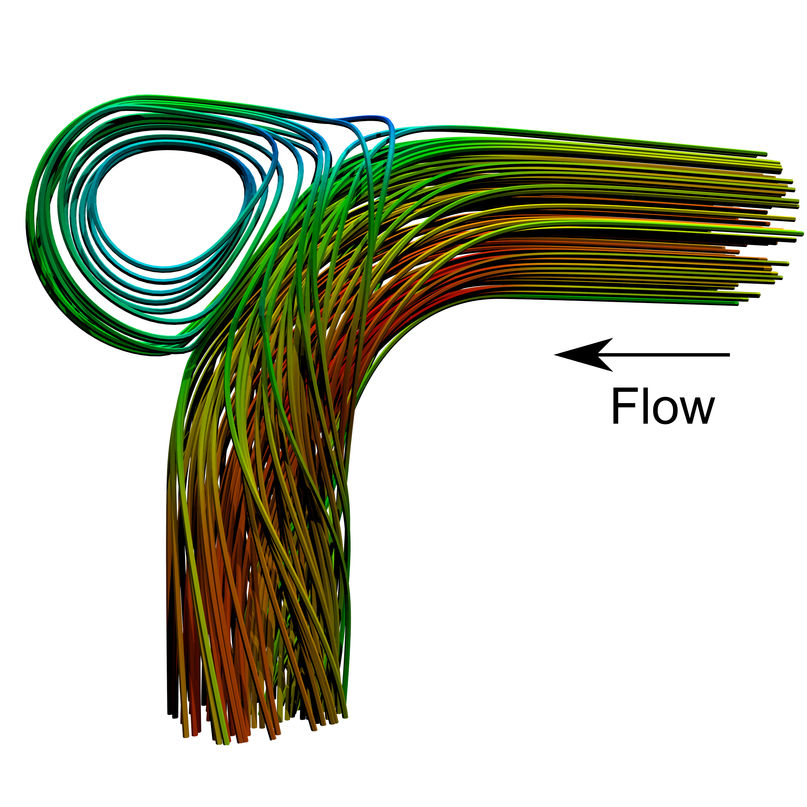
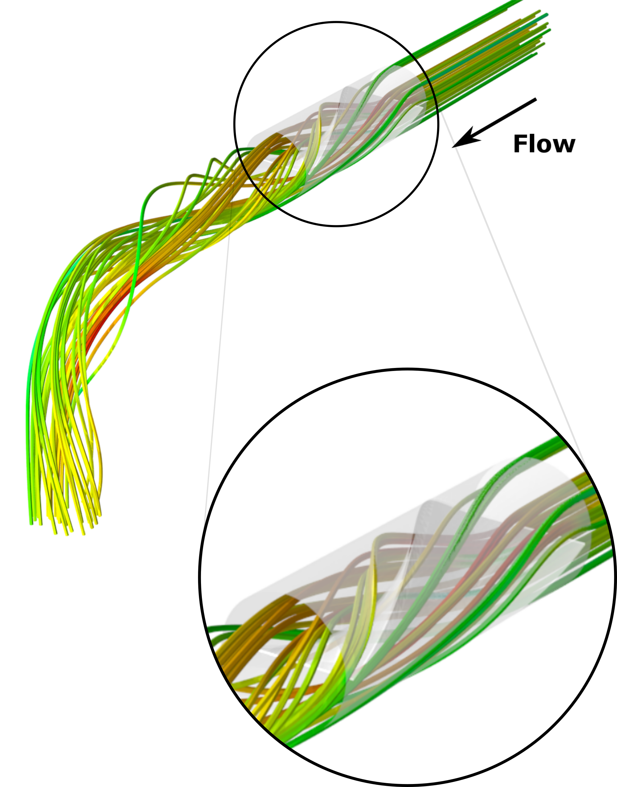

CFD, Escoamentos Multifásicos e Turbulência
Esta linha aplica Dinâmica dos Fluidos Computacional (CFD) na análise de escoamentos complexos, com ênfase em fenômenos multifásicos e regimes turbulentos presentes em problemas de engenharia.
Os projetos apoiam a interpretação de fenômenos fundamentais e o desenvolvimento de soluções para desafios industriais que exigem alto nível de predição física e robustez numérica.
As análises combinam modelos de turbulência e representação das fases para estudar campos de velocidade, transporte de partículas e interações entre fluido e sólidos. A comparação com dados experimentais ajuda a avaliar a capacidade preditiva dos modelos.

